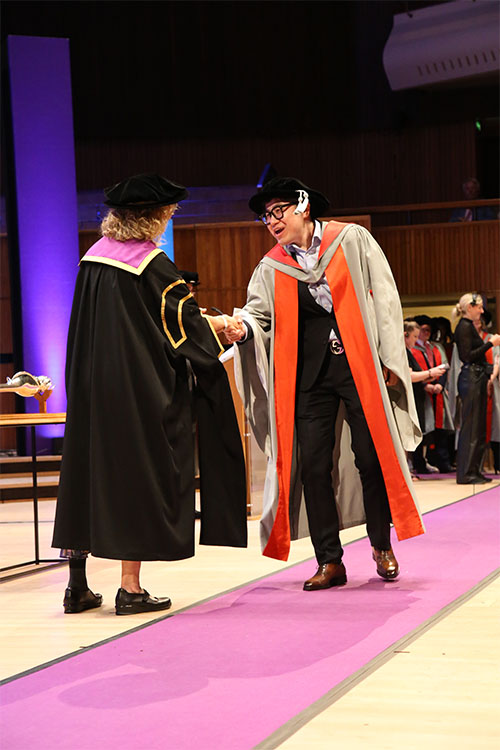
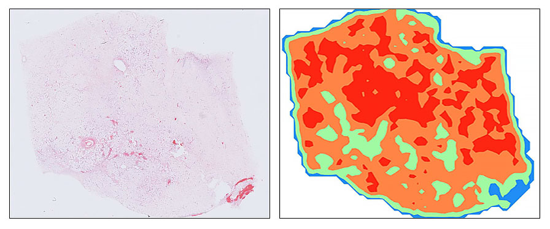
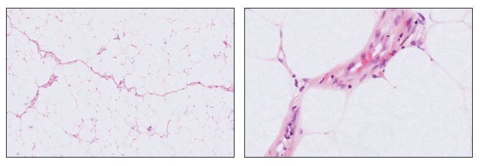
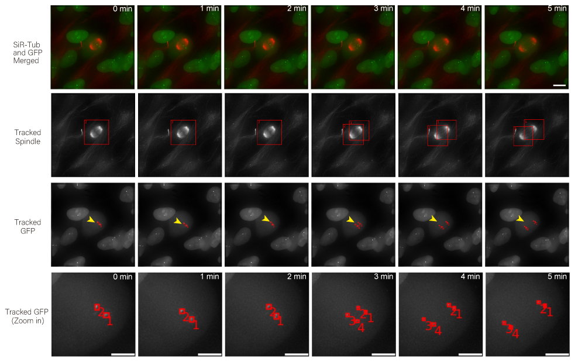
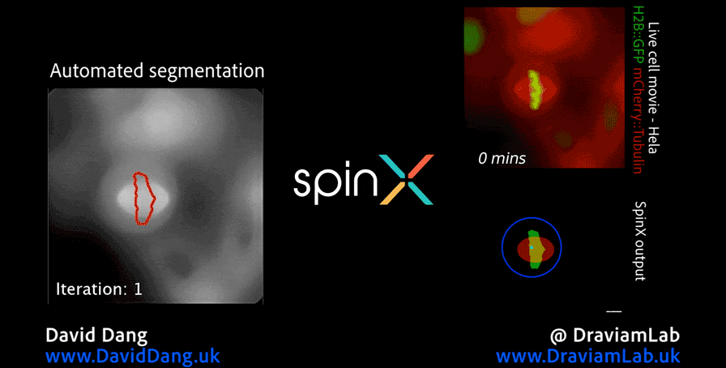

AI for Medical Imaging
Dr. Binghao Chai (柴秉浩)
AI researcher developing solutions for digital pathology, cancer diagnostics, and microscopy imaging.

AI for Medical Imaging
AI researcher developing solutions for digital pathology, cancer diagnostics, and microscopy imaging.

I develop AI solutions for diagnosing and subtyping soft tissue sarcomas and their mimics from digitised histopathology. A major focus is making pathology models more robust to real-world variation in staining and scanning across laboratories (generalisability in clinical settings), especially for rare and morphologically diverse tumours. This work combines foundation-model evaluation with tumour classification pipelines that aim to improve diagnostic consistency, efficiency, and clinical usefulness.
My research focuses on applying advanced AI techniques to the diagnosis and subtyping of soft tissue sarcomas and their mimics, with a particular emphasis on computational classification from digitised histopathology. Soft tissue sarcomas are rare, morphologically diverse tumours that present significant diagnostic challenges, often requiring expert review and ancillary testing. By leveraging modern deep learning techniques, including state-of-the-art foundation models, I aim to improve diagnostic accuracy, efficiency, and generalisability in real-world clinical settings.

One strand of my work, conducted in collaboration with Google Health and The Alan Turing Institute, explores how variations in tissue staining and scanning protocols across laboratories affect the performance of AI models in pathology. Using sarcoma pathology as a challenging test case, this project evaluates multiple pathology foundation models to understand their robustness and adaptability. The goal is to provide insights that can inform the development of AI systems capable of consistent and reliable performance across diverse clinical environments.
Alongside this, I also investigate tumour classification approaches in soft tissue pathology, including methods that address common diagnostic challenges. An example is an earlier work on developing computational pipelines to distinguish between benign lipomas and malignant atypical lipomatous tumours from whole slide images, a task that often requires detailed morphological assessment and specialist review. These complementary research directions, exploring colour-related techniques as well as advancing tumour classification methods, aim to pave the way for more reliable, adaptable, and clinically useful AI tools in digital pathology.

I design computational pipelines for analysing high-resolution 3D and time-lapse microscopy of live cells, with a particular focus on spindle and kinetochore dynamics. The aim is to make tracking in crowded multicellular environments more scalable, reliable, and biologically informative for real experimental workflows. This strand of work has led to Multi-SpinX, related methodological publications, and deployment into ZEISS imaging software.
In addition to my work in digital pathology, I also conduct research in the analysis of high-resolution microscopy time-lapse images, particularly for studying the dynamic subcellular structures of live cells. Advances in live-cell imaging technologies now allow researchers to capture large volumes of 3D and time-lapse data, revealing intricate biological processes in unprecedented detail. However, the complexity of these datasets, with structures moving in three dimensions, changing shape over time, and often existing in crowded environments, makes automated analysis both computationally challenging and essential for high-throughput studies. My work in this area aims to design and implement computational frameworks that enable robust, scalable, and accurate tracking of such structures, helping to unlock new biological insights while reducing the reliance on labour-intensive manual annotation.

As part of this research, I led the development of Multi-SpinX, an advanced computational framework for automated tracking of mitotic spindles and kinetochores in multicellular environments. During mitosis, the mitotic spindle, a dynamic microtubule-based structure, orchestrates the segregation of chromosomes, which are attached via the kinetochore at their centromeric regions. Both structures undergo complex and often independent movements in 3D space over time, making them particularly challenging to track in crowded or high-throughput imaging experiments. Multi-SpinX extends the capabilities of the original SpinX system, which was limited to single-cell metaphase analysis. The framework was developed in collaboration with Prof. Viji Draviam (Queen Mary University of London), Prof. Kozo Tanaka (Tohoku University), ZEISS, and other colleagues. Multi-SpinX is now integrated into ZEISS arivis Pro and ZEISS arivis Cloud, and provides a scalable solution for researchers studying spindle-kinetochore dynamics, enabling richer quantitative analyses of mitosis in complex multicellular contexts.